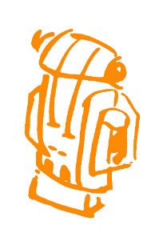
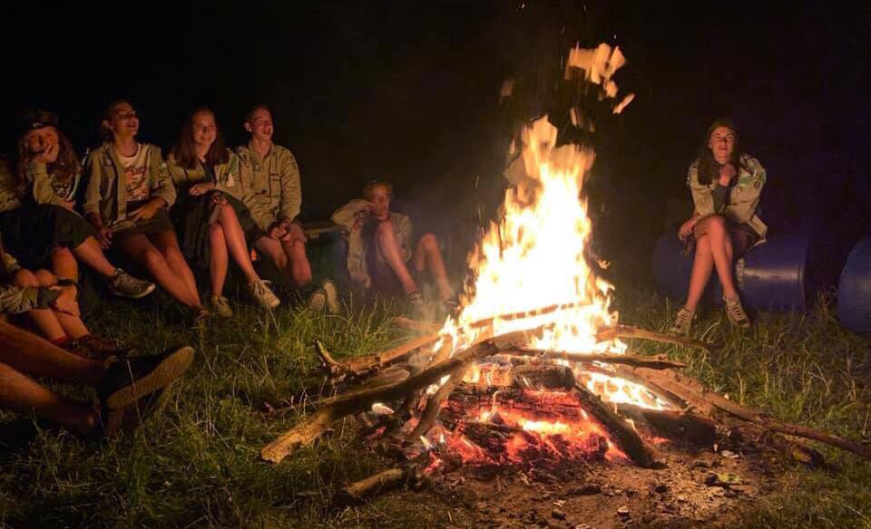
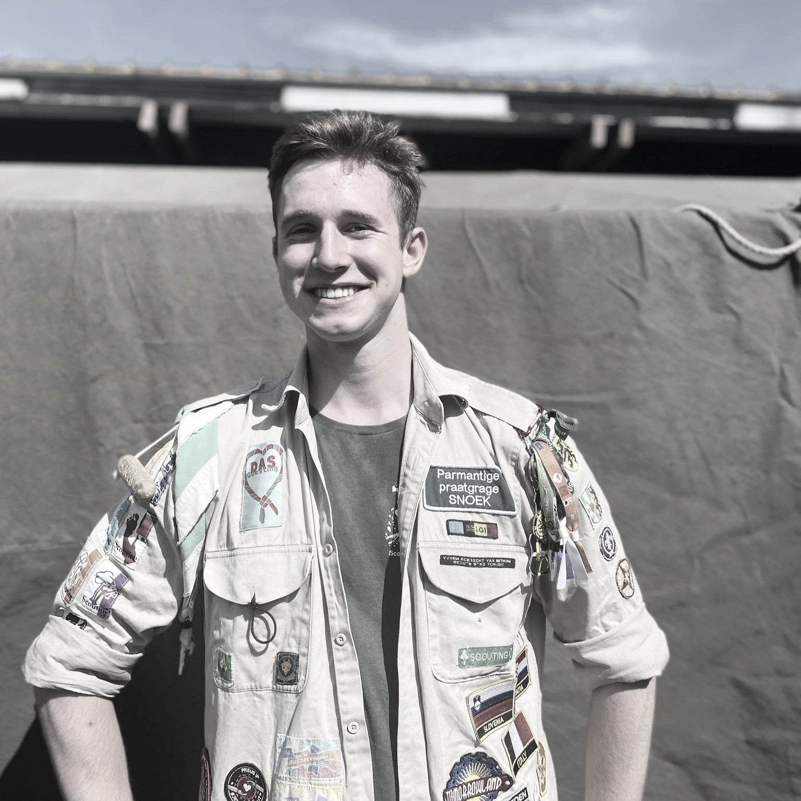
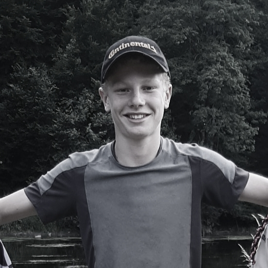
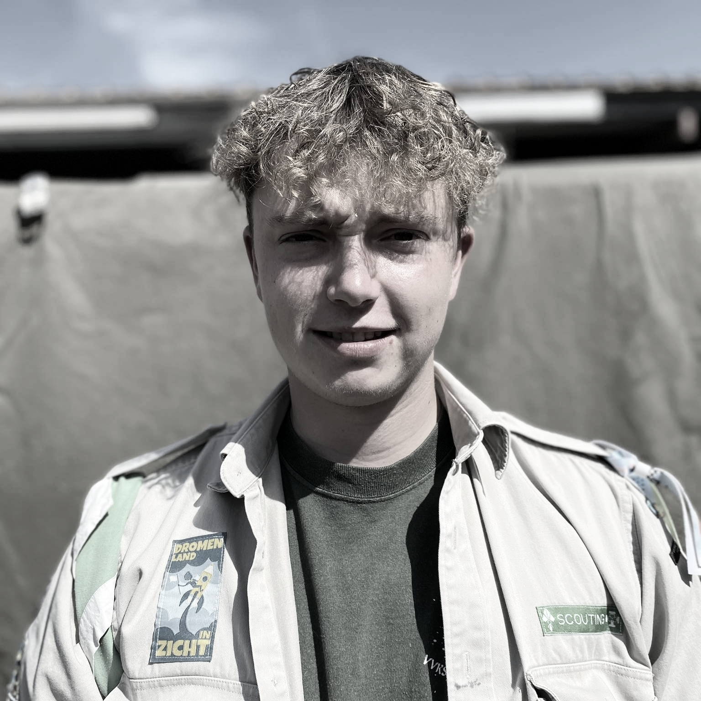
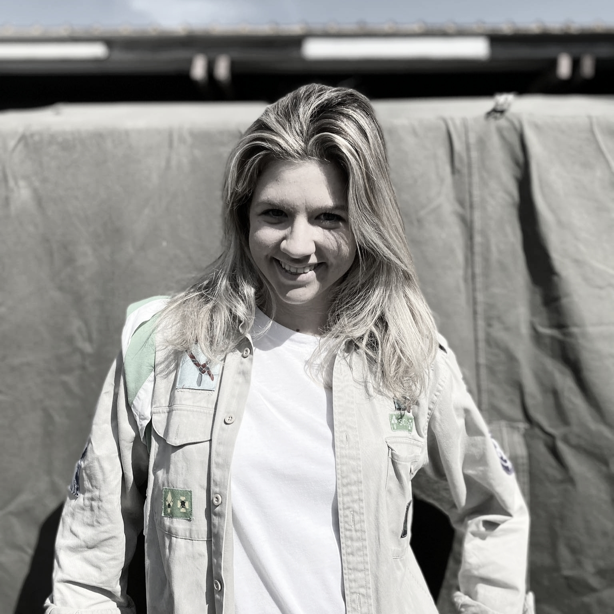

Op avontuur in de natuur, samen in patrouille.

Jonggidsen en jongverkenners (jonggivers) trekken er graag op uit in de natuur of verkennen hun buurt. Op tentenkamp koken ze af en toe hun eigen potje en trekken ze te voet op tweedaagse. Ze gaan op avontuur en zitten 's avonds gezellig rond het kampvuur. De derdejaars krijgen bovendien hun eigen totem!
In vaste leefgroepjes, patrouilles genoemd, werken ze samen en nemen ze initiatieven — van kattenkwaad tot leuker. Jonggivers gaan twee keer op weekend en een kamp dat tien dagen duurt.
Stilaan leren ze dat scouting niet stopt zodra de activiteit voorbij is. Jonggivers leren zichzelf kennen in de omgang met elkaar en krijgen een waaier aan mogelijkheden om mee te beslissen, zelf de handen uit de mouwen te steken en vaardigheden onder de knie te krijgen.




